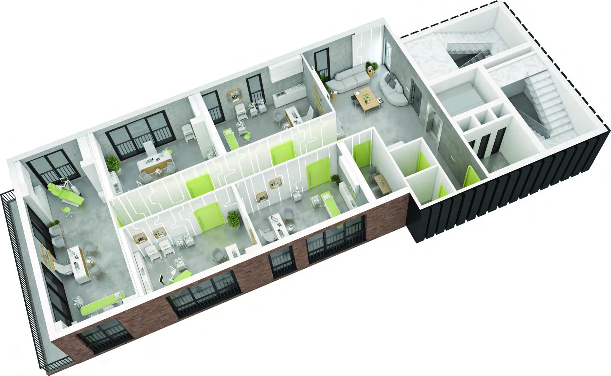

PROJECT OVERVIEW
Ottomed Ataşehir
A medical office concept in Ataşehir, with clinic and consultation interiors presented in the project catalogue.
Property typeMedical office concept
UseClinic and consultation spaces
Photo gallery

Each gallery image is labelled by type. Architectural illustrations do not show the current construction condition; archive photographs are not a current status report.
WORKSPACES
Spaces and facilities
Catalogue illustrations show potential clinic layouts and interiors. Suitability, approvals and fit-out requirements must be checked for the specific space.
LOCATION AND ACCESS
Ataşehir · İstanbul
Located in Ataşehir on Istanbul’s Asian side.
YOUR NEXT STEP
Explore the available spaces
Request the current space selection, price and payment options. Compare the exact space, view and included services before arranging your purchase.